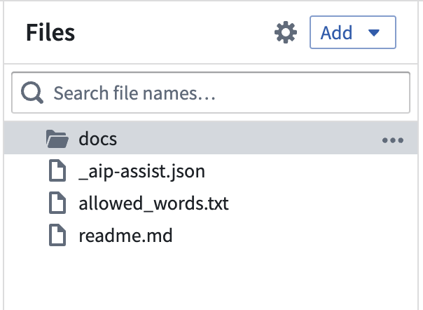
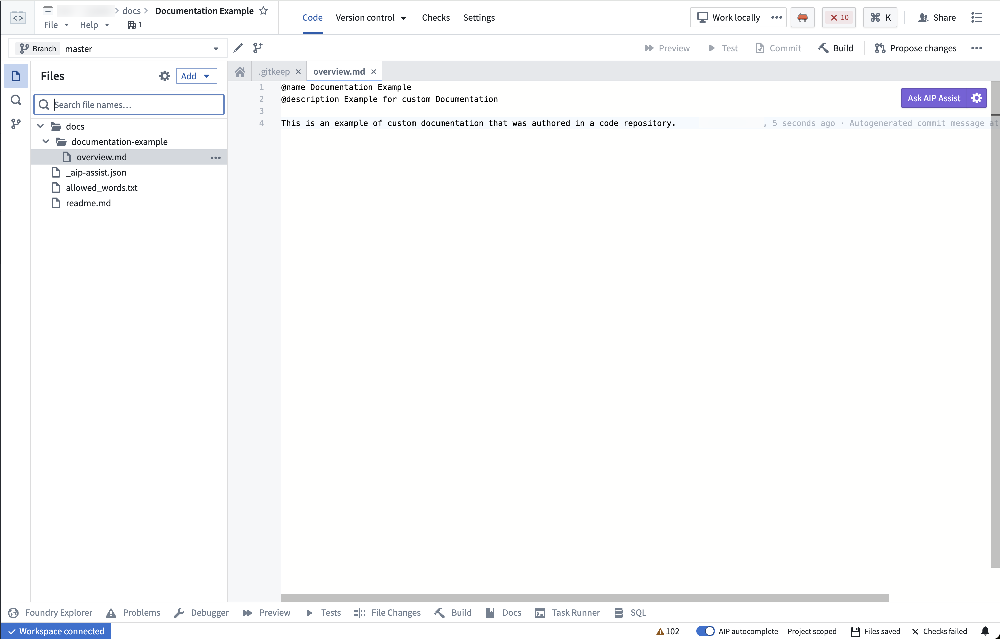

In-platform custom documentation is structured as "bundles", where a "bundle" is a grouped set of documentation pages that are published together and navigationally linked. Each bundle must have, at minimum, an overview page (overview.md) to serve as a landing page for users navigating to the bundle from the custom documentation home page, as well as an ordering file (ordering.md) that specifies the structure of pages in the bundle.
All documentation files should be stored in a custom docs repository's docs folder. If you do not yet have a custom docs repository, follow the instructions to create a new custom docs repository.

To add a new bundle to a custom docs repository, create a new folder in the docs folder with a name that is representative of your documentation bundle's intended contents (such as inventory-management-application). Note that folder file names must be unique and cannot contain spaces. The folder will be used as the product ID for the bundle.
Within the new folder for a bundle:
overview.md. See the example below for more details.overview.md, declare a name for the product bundle using the @name annotation. This will be displayed as the name of the documentation bundle in the user-facing in-platform custom docs.overview.md, provide a short description for the product using the @description annotation.overview.md to orient the reader and provide context around the core purpose or workflows of the product.ordering.md and use this file to declare the structure of your content. Note that the overview.md does not appear in the ordering.md since overview.md must exist by default. See the documentation on structuring your docs bundle for more details.:::callout{theme="neutral"}
The name and description specified with the @name and @description annotations will appear in the list of documentation bundles on the in-platform custom documentation homepage at <your-enrollment>/workspace/documentation.
:::

overview.mdBelow is an example of an overview.md for Contour. Note that this example overview.md contains a @name, a short @description, and introductory text about the product.
@name Contour
@description Point-and-click data analysis at scale
Contour provides a point-and-click user interface to perform data analysis on tables at scale. These analyses can be used to create interactive [dashboards](@contour/dashboards-overview) that allow others to explore and investigate the data in a guided, structured way.
## Key features
Contour enables you to:
* Visualize, filter, and transform data without code.
* Organize complex analyses into analytical paths.
* Parameterize analyses to easily switch between different views of the data and results.
* Create interactive dashboards to share findings.
* Save analysis results as a new dataset for use in other Foundry tools.
* Leverage Contour's [expression language](@contour/expressions-overview) for more advanced transformations and aggregations.
## When to use Contour
Contour is a good fit for analytical use cases where:
* **Some or all of the data you want to use is not mapped in the Ontology.** In general, we recommend using the [Ontology layer](@ontology/overview) whenever possible, but there are some cases where this may not be appropriate (such as a one-time upload that will not be cleaned or reused).
* **You need to operate on a very large dataset.** For instance, performing joins on over 100,000 objects or aggregations on over 50,000 rows.
* **You want to share your analysis results as a new dataset for use in other Foundry tools.** [Learn more about saving results as a dataset.](@analytics/datasets-object-sets)